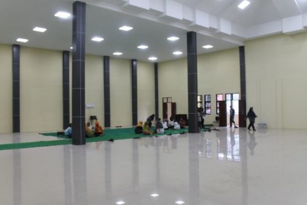
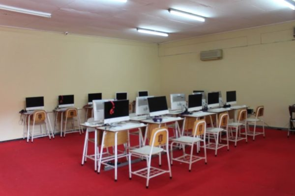
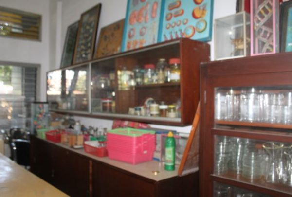
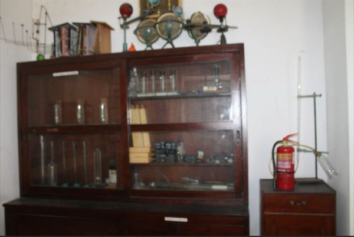
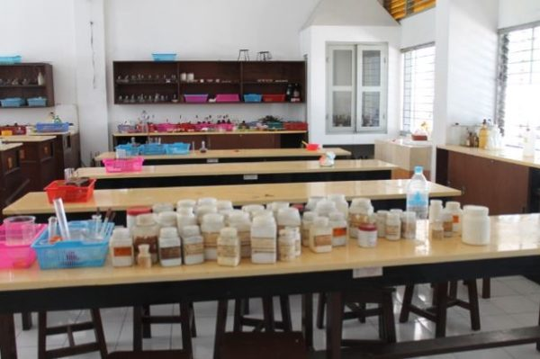
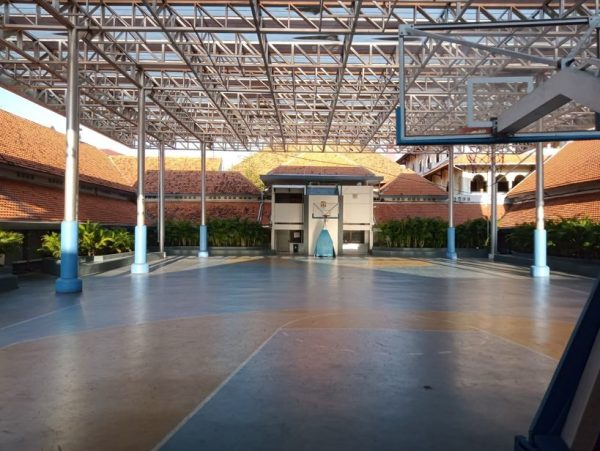
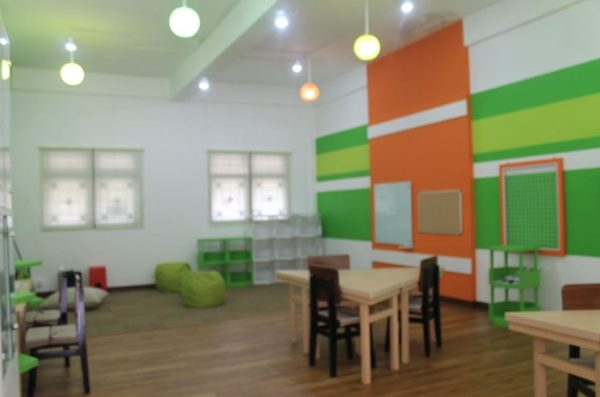
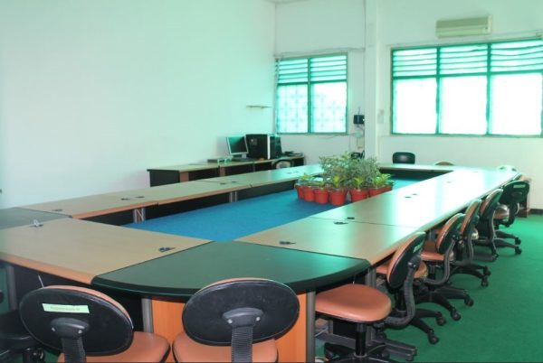

Fasilitas Penunjang Akademik
SMA Negeri 5 Surabaya memiliki fasilitas untuk mendukung kegiatan belajar, praktikum, olahraga, dan pengembangan minat siswa.
- Laboratorium sains dan komputer untuk kegiatan praktikum.
- Ruang TRRC sebagai pusat referensi dan kegiatan belajar.
- Aula dan lapangan tengah untuk kegiatan sekolah dan olahraga.
- Ruang Ecoyouth untuk diskusi dan kegiatan kreatif siswa.
Ruang dan Alat

Aula Sekolah
Ruang serbaguna untuk kegiatan sekolah, pertemuan, dan acara bersama.

Laboratorium Komputer
Ruang praktik untuk mendukung pembelajaran teknologi dan keterampilan digital.

Laboratorium Biologi
Laboratorium untuk mengamati makhluk hidup dan melakukan kegiatan praktikum biologi.

Laboratorium Fisika
Ruang praktikum untuk mempelajari konsep fisika melalui alat dan percobaan.

Laboratorium Kimia
Laboratorium untuk kegiatan eksperimen dan pembelajaran kimia.

Lapangan Tengah
Area terbuka untuk olahraga dan kegiatan siswa.

Ruang Ecoyouth
Ruang nyaman untuk kegiatan, diskusi, dan pengembangan kreativitas siswa.

Ruang TRRC
Teachers Research and Reference Center, ruang referensi dan kegiatan belajar.